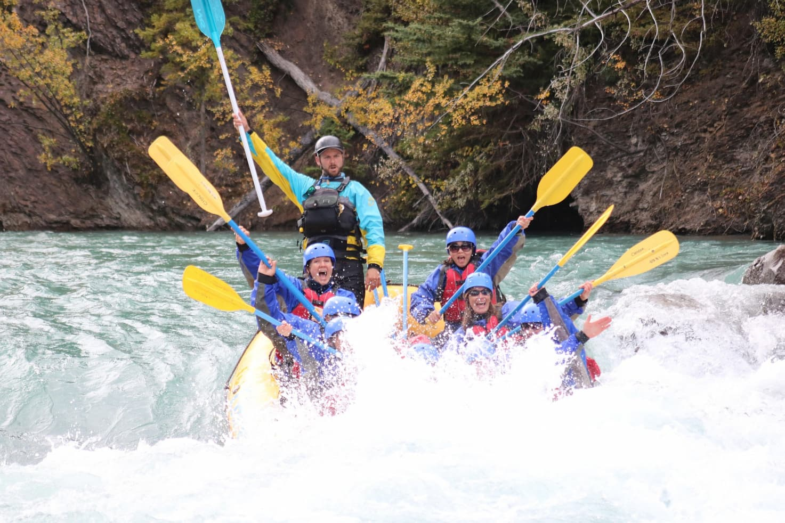
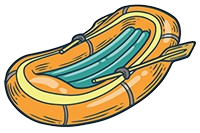
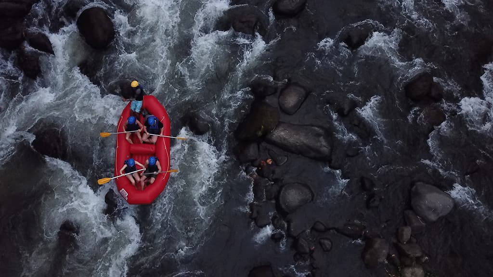

Our mission is to share the thrill of the river safely and sustainably—crafting unforgettable memories, championing conservation, and building a community that loves the outdoors as much as we do.



Our mission is to share the thrill of the river safely and sustainably—crafting unforgettable memories, championing conservation, and building a community that loves the outdoors as much as we do.
From a single raft and a bold dream to a trusted outfitter, our journey has always followed the current of passion and service. What began as a small operation has grown into a premier white-water rafting company focused on safety, stewardship, and unforgettable adventures.


Book your next white-water adventure today!